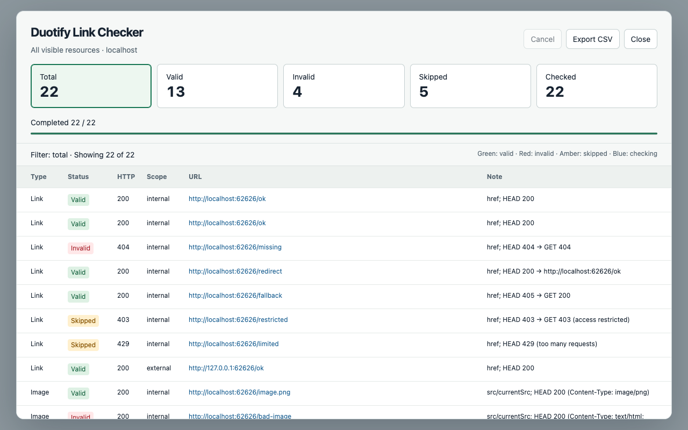

Duotify Link Checker
Check visible links, images, CSS images, video and audio. Filter broken resources directly on the page.
Download · 開發文件 / Documentation · Privacy policy

Check visible links, images, CSS images, video and audio. Filter broken resources directly on the page.
Download · 開發文件 / Documentation · Privacy policy
